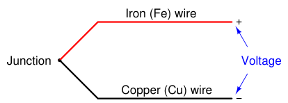
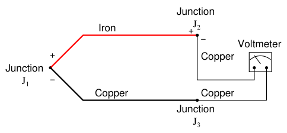
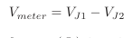
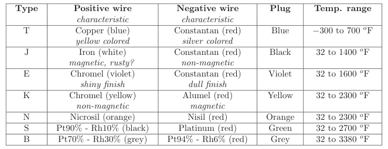

The original, as published: Tony R. Kuphaldt, Lessons In Industrial Instrumentation, Thermocouples: junctions and types. CC BY 4.0, https://creativecommons.org/licenses/by/4.0/. Imported as published, from https://www.ibiblio.org/kuphaldt/socratic/sinst/book/liii.pdf https://www.ibiblio.org/kuphaldt/socratic/sinst/book/liii.pdf
When two dissimilar metal wires are joined together at one end, a voltage is produced at the other end that is approximately proportional to temperature. That is to say, the junction of two different metals behaves like a temperature-sensitive battery. This form of electrical temperature sensor is called a thermocouple:

This phenomenon provides us with a simple way to electrically infer temperature: simply measure the voltage produced by the junction, and you can tell the temperature of that junction. And it would be that simple, if it were not for an unavoidable consequence of electric circuits: when we connect any kind of electrical instrument to the thermocouple wires, we inevitably produce another junction of dissimilar metals. The following schematic shows this fact, where the iron-copper junction J1 is necessarily complemented by a second iron-copper junction J2 of opposing polarity:

Junction J1 is a junction of iron and copper – two dissimilar metals – which will generate a voltage related to temperature. Note that junction J2, which is necessary for the simple fact that we must somehow connect our copper-wired voltmeter to the iron wire, is also a dissimilar-metal junction which will also generate a voltage related to temperature. Further note how the polarity of junction J2 stands opposed to the polarity of junction J1 (iron = positive ; copper = negative). A third junction (J3) also exists between wires, but it is of no consequence because it is a junction of two identical metals which does not generate a temperature-dependent voltage at all. The presence of this second voltage-generating junction (J2) helps explain why the voltmeter registers 0 volts when the entire system is at room temperature: any voltage generated by the ironcopper junctions will be equal in magnitude and opposite in polarity, resulting in a net (series-total) voltage of zero. Only when the two junctions J1 and J2 are at different temperatures will the voltmeter register any voltage at all.
We may express this relationship mathematically as follows:

With the measurement (J1) and reference (J2) junction voltages opposed to each other, the voltmeter only “sees” the difference between these two voltages. Thus, thermocouple systems are fundamentally differential temperature sensors. That is, they provide an electrical output proportional to the difference in temperature between two different points. For this reason, the wire junction we use to measure the temperature of interest is called the measurement junction while the other junction (which we cannot eliminate from the circuit) is called the reference junction (or the cold junction, because it is typically at a cooler temperature than the process measurement junction).
Much of the complexity of thermocouples is related to the reference junction voltage and how we must deal with that (unwanted) potential when using a thermocouple as a measuring device. For most practical applications, we just want to measure the temperature at one location, not the difference in temperature between two locations which is what a thermocouple naturally does. A number of different techniques exist to deal with this problem – forcing a differential temperature sensor to act like a single-point temperature sensor – and we will explore the most common techniques in this section. Students and working professionals alike often find this concept of a reference junction and its effects endlessly confusing. My advice to the confused is to return to the simple iron-copper wire circuit shown previously as a “starting point,” and then deduce its behavior from first principles6. We know that a dissimilar-metal junction creates a voltage with temperature. We also know that in order to make a complete circuit with iron and copper wire there must be a second iron-copper junction somewhere else in that same circuit, the polarity of which is necessarily opposed to the first. If we call the first iron-copper junction J1 and the second junction J2, we absolutely must conclude that the net voltage registered by the voltmeter in this circuit will be VJ1 −VJ2.
All thermocouple circuits – no matter how simple or complex – exhibit this fundamental property. Mentally constructing a simple circuit of two dissimilar-metal wires and then performing “thought experiments” to see how that circuit will behave with those junctions at the same temperature and also at different temperatures is the best way I can suggest for any person to comprehend thermocouples. Students especially tend to cope with complexity through memorization: committing to memory catch-phrases and formulae such as Vmeter = VJ1−VJ2. This is a poor coping mechanism, as it grants the illusion of understanding with none of the substance. The real secret is to know why a thermocouple circuit acts as it does, and that only comes through practiced reasoning. Throughout the rest of this section, as we explore reference junction compensation, how to interpret voltage measurements in thermocouple circuits, and how to simulate thermocouples at temperature, we will keep returning to this simple iron-copper wire circuit to refresh our understanding of how and why thermocouple circuits behave. If you understand this one fundamental concept, the rest will make sense to you. If you continually find yourself confused by thermocouple circuits, it means you do not yet fully understand this basic circuit, and you need to return to it and think it through until you do.
6By “first principles,” I mean the basic laws of electric circuits. In this case, the most important law to apply is Kirchhoff’s Voltage Law: the algebraic sum of voltages in any loop must be equal to zero.
Thermocouples exist in many different types, each with its own color codes for the dissimilar-metal wires. Here is a table showing the more common thermocouple types and their standardized colors7, along with some distinguishing characteristics of the metal types to aid in polarity identification when the wire colors are not clearly visible:

Types S and B use platinum or platinum-rhodium alloy wire, with different alloying distinguishing the positive from the negative wires. Sometimes type B is colored green and red rather than grey and red. Note how the negative (−) wire of every thermocouple type is color-coded red. While this may seem backward to those familiar with modern electronics (where red and black usually represent the positive and negative poles of a DC power supply, respectively), bear in mind that thermocouple color codes actually pre-date electronic power supply wire coloring! Aside from having different usable temperature ranges, these thermocouple types also differ in terms of the atmospheres they may withstand at elevated temperatures. Type J thermocouples, for instance, by virtue of the fact that one of the wire types is iron, will rapidly corrode in any oxidizing8 atmosphere. Type K thermocouples are attacked by reducing9 atmospheres as well as sulfur and cyanide. Type T thermocouples are limited in upper temperature by the oxidation of copper (a very reactive metal when hot), but stand up to both oxidizing and reducing atmospheres quite well at lower temperatures, even when wet. One final note on the thermocouple types shown in this table is that the temperature ranges given are approximate, and vary with the intended measurement accuracy. One may have to stay
7The colors in this table apply only to the United States and Canada. A stunning diversity of colors has been “standardized” for each thermocouple type per nationality. The British and Czechs use their own color code, as do the Dutch and Germans. France has its own unique color code as well. Just for fun, an “international” color code also exists which doesn’t match any of the others. There are other deviations as well: the wire colors for type R and S thermocouples, for example, are standardized for extension-grade wire but not for thermocouple-grade wire. 8By “oxidizing,” what is meant is any atmosphere containing sufficient oxygen molecules or molecules of a similar element such as chlorine or fluorine. 9“Reducing” refers to atmospheres rich in elements that readily oxidize. Practically any fuel gas (hydrogen, methane, etc.) will create a reducing atmosphere in sufficient concentration.
within a more limited range of temperature than what is shown in this table if a certain minimum level of accuracy is desired from the thermocouple. Consult manufacturers’ data for details!